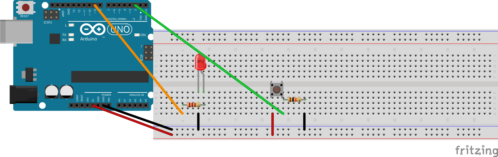

בונים מחדש את מעגל הבסיס מפרויקט 1 — לד וכפתור. זה הבסיס של משחק זמן התגובה: הלד נדלק, ואתם לוחצים מהר ככל האפשר.
נגד ההורדה של 10 קΩ חייב להיות בין רגל 2 ל-GND — לא בין 5 V ל-GND. אם שמים אותו בין 5 V ל-GND, לחיצה על הכפתור יוצרת קצר ומאפסת את הארדואינו. עוקבים באצבע: מרגל 2 ל-GND? ✓

פותחים את תיקיית פרויקט 2 ויוצרים בתוכה תיקייה חדשה בשם Project_2_Reaction_Time_Game
Google Drive → My Drive → Arduino_Projects → התיקייה עם הכינוי שלכם. פותחים בה את קלוד קוד יחד עם המורה.
מכניסים לד לברדבורד כך ששתי הרגליים בטורים שונים. הרגל הארוכה (+), הקצרה (−).
מחברים את הרגל הארוכה (+) לרגל 9 דרך נגד 220 אוהם (אדום · אדום · חום), ואת הקצרה (−) ל-GND.
מכניסים כפתור לרוחב החריץ המרכזי. אם לא יושב נכון — מסובבים 90°.
מחברים רגל A ל-5 V, ורגל B ל-רגל 2.
מרגל B מחברים גם דרך נגד 10 קΩ (חום · שחור · כתום) ל-GND — זהו נגד ההורדה.
הלד מחובר לרגל 9 דרך הנגד, והכפתור יושב לרוחב החריץ המרכזי — צד אחד ל-5 V, השני לרגל 2 ודרך נגד ההורדה ל-GND.
עדיין לא אמור להידלק שום דבר — עוד לא העלינו קוד. זה יקרה בשלב 2.